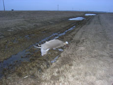

|
MINOT, NORTH DAKOTA
Angelika Brudniak, Cynthia Madansky | Österreich/USA 2008 | 18 Min.
Format: Beta SP
Originalsprache: Englisch
Kamera: A. Brudniak, C. Madansky
Schnitt: A. Brudniak, C. Madansky
Musik: Zeena Parkins
Verleih: Sixpack Film, Wien
www.sixpackfilm.com
Großer Preis, Cinéma du Réel, Paris 2008
Deutsche Erstaufführung
Der Film erzählt von einem Leben, das sich direkt über einem Nuklearwaffendepot abspielt und im Kalten Krieg stecken geblieben ist. Die Stimmen der Bewohner – Teenager, Hausfrauen, Air-Force-Mitarbeiter – berichten über einen Alltag, der geprägt ist von Paranoia, Überwachungskameras, Rassismus und Fehlalarmen, während die Kamera ihre teilnahmslosen Streifzüge fortsetzt. Wie eine Atom-Wolke über dem Flachland schwebt über allem der Ambient-Sound von Zeena Parkins. (Alexandra Seibel)
Angelika Brudniak lebt und arbeitet in Wien. Zusammen mit Cynthia Madansky arbeitet sie an einem zweiten Film zu nuklearen Waffen, "Complex 2030".
Filme: Minot, North Dakota 2008
zurück
|